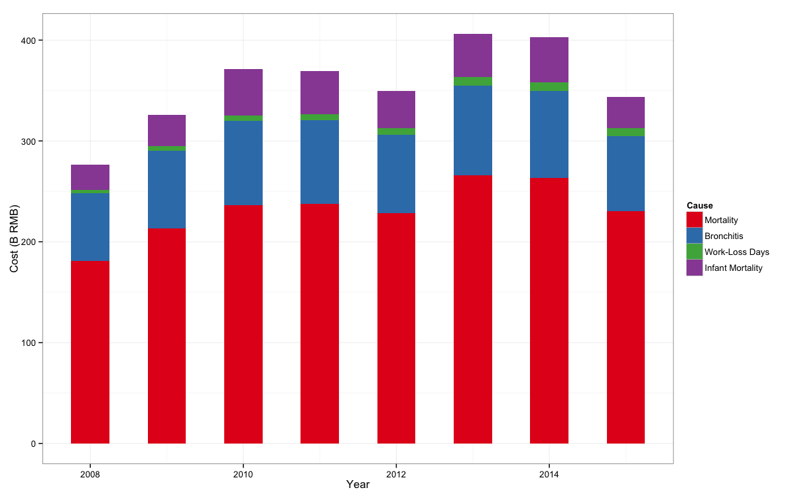
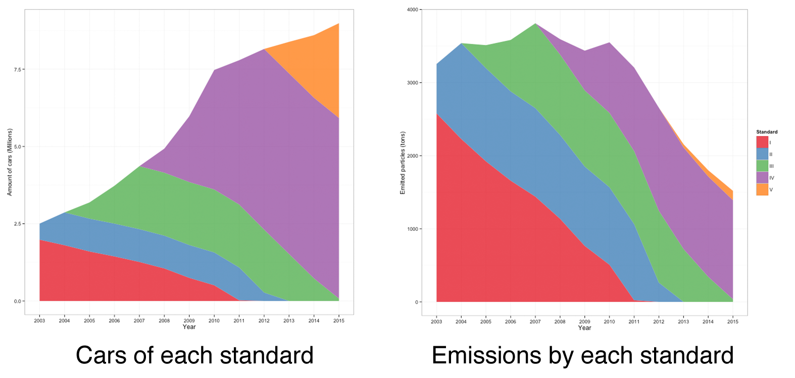

This article is a much reduced version of the thesis I submitted as part of the requirement for the degree
of Master's of Public Administration (specialized in International Development) at the
Tsinghua School of Public Policy in Management in June 2016:
"Cost Benefit Analysis of the pollution remedial policies in Beijing" (北京污染防治政策的成本效益分析).
In order to make it slightly shorter than the original 100 pages, many methodological details and calculations were omitted.
You can therefore just trust my results :)
News of the Beijing's "Airpocalypse" regularly make it into western newspapers. Pictures of
people, their faces covered with simple paper masks, in front of a uniformly gray-white background,
accompanied by quotes wondering about the "price" of China's rapid development.
Having lived in Beijing for four years, during some of its worst moments, the question
of air pollution, of its origin and of the ways to fight it have always been of deep interest to me.
I started collecting data in 2012, from the monitoring stations at the American embassy and the Chinese government's ones
that were set up over the subsequent years, to try understand its dynamics and its evolution with the
development of the city.
In particular, I was interested in its lack of evolution. While the city was transforming, its
economy becoming more service-oriented, the industries getting flushed out, coal being progressively
replaced by natural gas as a primary source of fuel and the government implementing numerous policies,
its pollution levels remained generally the same.
Besides a sensible reduction in mid-2015, which was followed by record-breaking peaks starting in
November of the same year, there was a certain "sustainability" to the pollution levels in the capital.
This thought prompted me to study the adequacy of Beijing's development model to the
environmental Kuznet's curve.
This curve is supposed to describe the environmental degradation
of a society as function of its economic development. Economic take-off is accompanied by increased levels
of pollution and degradation, as polluting industries are prioritized. A peak is reached, when economic
development empowers the civil society and concerns for health and environment take over the will for purely
economical development.
In order to estimate the "location" of the city of Beijing on this curve, I set to
estimate the cost that the pollution represented to Beijing, as well as the cost of the policies
that were implemented to fight it. This sort of cost-benefit analysis would hopefully provide an
insight as to where on the road Beijing was, and what path it was taking.
Pollution by particles smaller than 2.5 micrometers (the most prevalent and most resilient
to measures) creates a wide array of problems. It increases the likelihood of pulmonary and cardiac diseases, and is
directly linked to the occurrences of early deaths, in adults as well as in infants.
In order to compare all of those problems on an equal footing, as well as later with the
cost of policies, it is necessary to delve into the statistical values of lives and assign a monetary
cost to those afflictions.
The value of statistical life (often referred to as VSL) is a well-studied measure. If the concept might seem cynical,
it is only with such a fungible measure that we can hope to have comparable results. The resulting value should not,
however, be seen as an exact measurement nor as an upper bound, but instead as a lower bound to the actual cost of pollution.
Furthermore, when studying development, cost is a particularly interesting concept. Indeed, under high growth, and all
other things being equal, the cost will rise quickly following economic development.
The country, as a whole, will incur a cost that is much higher for a day when a highly educated lawyer or engineer is unable
to work than when a factory worker or farmer is in the same situation.
This should not be taken to mean that the life of a white-collar worker is more valuable than which of a blue-collar one
but, when more and more people reach middle and upper classes, the direct economic consequences of environmental degradation get
more important, and the balances calculated in the cost-benefit analyses of policies can quickly shift.
A very large number of studies have established, over the years, a "collection" of concentration-response (CR) functions,
mapping an atmospheric concentration of a certain pollutant to the increase in occurrence of an event such as
a disease or an early death.
During the implementation of the Clean Air For Europe (CAFE) policies, a very complete methodology was compiled,
aggregating hundreds of studies, assigning concentration-response functions and monetary values to many afflictions.
Building upon this resource, I supplemented it with additional studies on the specific circumstances of Beijing to
try to obtain an accurate picture of the situation.
This sums up to a total of 278 Billion RMB for the year, which represents 12% of the total GRP of Beijing for the
same year, at 2.2 trillion RMB.
While this figure seems high, it is consistent with the findings of the CAFE cost-benefit analyses, which find
a total cost of particle pollution in Europe at 1250 euro per capita. (278 Billion RMB, at PPP exchange rates,
would correspond to a value of about 1450 euro per capita, assuming a population of 21.5 million in Beijing).
Plotting the results over the past years show no clear trend, if perhaps a slight increase in a first period
(economic development along with no reduction in pollution?) followed by a sensible reduction in total cost (as some of the policies
start to bear their fruits?).

What about the policies?
Three main type of policies are being implemented by the Chinese government as part of its fight against air pollution.
Of those, the first one is mostly applicable in rural areas, as in larger cities, and in Beijing in particular
most apartments have access to centralized district heating, as well as electric or gas stoves. (With the exception of
"migrant" villages, but this is a whole other subject.)
Besides this, starting shortly before the 2008 Olympics, the government of Beijing has been aggressively
conducting a policy of scrapping older cars in the city, while adopting stricter emissions standards
much earlier than the rest of China.
At the same time, the coal-fired plants that power the city have been shut down successively, to be replaced
by more efficient Combined Heat and Power (CHP) gas-fired power plants.
Two questions then need to be solved with regards to those policies:
To answer the first question, it is necessary to understand where the pollution is coming from.
Several studies have been conducted on the particular case of Beijing to try to classify the particles
into one of several possible origins. The methods vary, and we find numbers ranging for example from 2% from
car exhausts (Baumgartner, Zhang, Schauer, (2015)) to 31.1% (Beijing Environmental Protection Bureau, 2014).
Politics is at play here, as the government needs to show that its policies targeting cars have a chance
of being effective -- something that is unlikely if the part of pollution originating from car exhausts is less
than 5%.
None of the figures are actually wrong, but it seems that different levels of tolerance were used for classification,
resulting in varying quantities of "unknown" particles being attributed to other types.
For the purpose of this study I used the "optimistic" figure given by the Beijing Environmental Protection Bureau,
as I was studying policies, and those figures served as a motivation for those policies.
25% of particles attributed to coal, and 25% of them attributed to car exhausts. In other words,
if no coal was used in the city, pm2.5 pollution would fall to 75% of its current level,
and if all cars somehow magically disappeared, it would fall to 50% of current levels.
Coal to gas
From 2008, Beijing started to close down coal-fired power plants, for them to be replaced by gas-fired ones, while
all additional power plants were gas-powered. In 2008, 2.7 GW out of the total 3.4 GW of installed capacity
in Beijing used coal (80%), and in 2015, it was down to 0.9 GW out of a total of 7 GW of installed capacity (13%).
With the last power plant scheduled to close in 2016, the PM2.5 pollution coming from coal burning should be reduced to 0.
We can then calculate the additional costs that comes from switching from coal to natural gas as a fuel.
Assuming a utilization time of 4,700 hours per year, this means a total generated energy of 12.97 GWh from coal,
and 13.63 from natural gas for 2012. This corresponds to about 50% from each source, and this is what we will use as a
baseline to estimate the additional costs stemming from the change of fuel. At 2.28 RMB / cubic meter of natural
gas (CEFC), and 680 RMB per ton of coal (Bohai bay coal index), and considering 7.2 MWh per ton of coal and 10
kWh for a cubic meter of natural gas this means an additional annual expenditure of 992 Million RMB in 2014,
(67% natural gas), 2.7 Billion in the second year (88% natural gas), to stabilize at 3.7 Billion once all the
coal-fired power plants have closed down.
Scrapping cars
The case of cars is particularly interesting in Beijing because the city has been implementing national
standards much earlier than the rest of China. The China II standard, setting maximum emissions per vehicle
at 0.08 g / km was adopted by Beijing in 2003, and in 2006 by the rest of China. The China V standard, setting
the limit at 0.0045 g / km (which is stricter than European standards, at 0.005!) was adopted in 2014 by Beijing,
but won't be implemented in the rest of the country before 2018.
Using the statistics on car possession and registration provided by the National Bureau of Statistics for Beijing,
we can estimate how many cars of each standard were on the roads each year. Combined with the emissions standards,
it is possible to get an idea of how many tons of particles were emitted each year by cars in Beijing. This is
a very rough estimate, as it is unlikely that cars always produce exactly their limits, and it is also possible that
standards are not exactly enforced by manufacturers (the recent documentary "Under the dome" by journalist Chai Jing
suggests this is a likely possibility). Finally, the statistics on registration and possession seem to combine
both used and new vehicles in registrations. The graph below seems to suggest that all China I & II cars have
disappeared. It is enough to spend a few hours in the streets of Beijing to see many 10 year-old and more cars
and understand this is clearly not the case.

Here we can maybe give a first tentative answer to my hypothesis: major policies have been implemented, but
the development of the city has been so fast that they were not able to effectively solve the pollution problem.
Furthermore, the implementation of those standards were essentially a "free" policy, in that, except for some
administrative costs, and probably the development of new techniques for manufacturers, they did not result
in any long term cost for the city as a whole.
Costs, and benefits
From this, we can then estimate what benefits were achieved, and at what cost. Phasing out coal would translate in
a reduction by 75% of pollution levels between 2014 and 2019. Assuming a somewhat constant growth of car registrations
and consistent adoption of standards, pollution levels would decrease by an additional 12.5%. This would translate
to benefits of 340 Billion RMB over 5 years, and 1000 Billion RMB over 10 years, as all cars in Beijing are replaced by standard
VI cars and pollution levels fall to 52.5% of today.
So it appears that the benefits of the policies that address pollution in Beijing far outweighs their costs.
In fact at only a few billion RMB per year, the effort of the Beijing authorities might be characterised as lacking.
We can imagine a more extreme scenario, where all of Beijing cars would be scrapped over 5 years and replaced
by newer ones with the stricter standards. With figures for scrapping found in the literature at around 30,000 RMB per car,
and around 300,000 RMB for a new car, this would translate to 1.2 trillion RMB on 5 years, approximately equal to the cost of pollution,
which would fall more quickly in the following years, as the amount of particles form car exhausts become negligible.
To conclude, it can be said that the Chinese government, and the Beijing municipal government in particular
deployed an impressive arsenal of policies to combat pollution. They were able to react quickly and very likely
prevented a more dramatic rise in pollution levels, accompanying the very rapid development of the city.
However, as the still impressive cost of pollution shows, there is much more to be done to make Beijing
a really livable city.
But while the government has effectively acted in the past, it might very well hit a wall for the "next" steps.
Indeed, the policies that have been implemented were the "low-hanging fruits" of pollution remedial. As far as
transportation is concerned, it is just not possible anymore to enforce stricter standards. For fuel, there might
still be a few remaining persons burning coal as a cooking fuel in the city, but it represents a tiny fraction
of the total problem.
While many cities in Europe, such as London and Paris, are trying to phase out cars from their core, this seems
very unrealistic today in Beijing. 20 years ago, the city was dominated by bicycles, and for many Chinese,
cars are a symbol of their access to a more comfortable lifestyle. And indeed, there seems to be a constant contest
in the streets of the city over the size or power of the cars. Few people would be ready today
to give up their SUVs or sports cars.
This is also unfortunately due to Beijing's development model. Large avenues, super-blocks and hyper-centralized
and functionally differentiated districts, that make it impossible to achieve anything by foot.
If Beijing might have avoided the worst, the next stage will be much more difficult for the city. The government
will need to take more courageous actions and maybe rethink the traditional Chinese cities development model.
Finally, Beijing is a very special case in China. Few other cities have the funds necessary to finance
a complete coal phase-out. The stricter car emissions standards are mostly possible because of increased
political pressure, and take much longer to be enforced in the rest of the country.
If Beijing has managed to avoid the worst, it is not the case of some other cities. Hebei, the province surrounding
Beijing, has inherited most of the industries that were chased out of the capital. Baoding, a major city in this
province has pollution levels that are consistently above 200 μ / m3.
The "face" of China might be saved and its capital somewhat free from the airpocalypse, but it is far
from being pollution-free, and in the rest of China, massive air pollution is still not a solved problem.